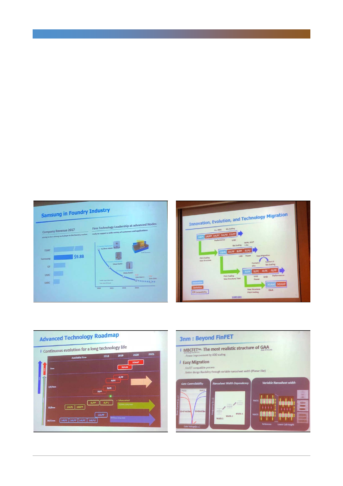

삼성전자(005930)
은 인공지능 서비스와 In-Memory 기술의 확장으로 가능할 전망이다. 인공지능
서비스산업의 시장규모는 2025년에 2천억 달러까지 성장하고 인공지능 서비스
구현을 위한 하드웨어 투자는 1,150억 달러까지 성장할 전망이다. 그리고 인공지
능 서비스 구현을 위한 하드웨어 투자 중 메모리반도체가 차지하는 비중이 높아
져 과거 PC시대에서 전체 반도체 중 메모리가 차지하는 비중이 15%였다면 데이
터센터 시대에는 이 비중이 30%까지 높아질 전망이다.
대용량 데이터 처리를 위한 In-Memory 컴퓨팅 수요 증가 전망
데이터센터 산업의 성장, 5G의 확산 등으로 대용량 데이터 처리에 대한 수요가
점점 커지고, 이를 위해 In-Memory 컴퓨팅 구현을 위한 대용량 디램 수요가 증
가할 전망이다. 빠른 속도의 데이터처리와 분석에 대한 필요성이 커지고 이를 구
현하기 위해서는 HBM(High Bandwidth Memory) 제품 등의 대용량 메모리수
요가 커질 수밖에 없다. 아직은 HBM 수요 비중이 높지는 않지만, 데이터센터 산
업이 성장하고 5G 네트워크가 확산될수록 메모리수요는 증가할 것이다.
[그림 1] 삼성전자 파운드리 사업 성과 및 계획
[그림 2] 미세공정화 계획
자료: 삼성전자, 한국투자증권
[그림 3] 기술 발전 로드맵
자료: 삼성전자, 한국투자증권
[그림 4] 3nm부터 GAA 기술 적용
자료: 삼성전자, 한국투자증권
자료: 삼성전자, 한국투자증권
2